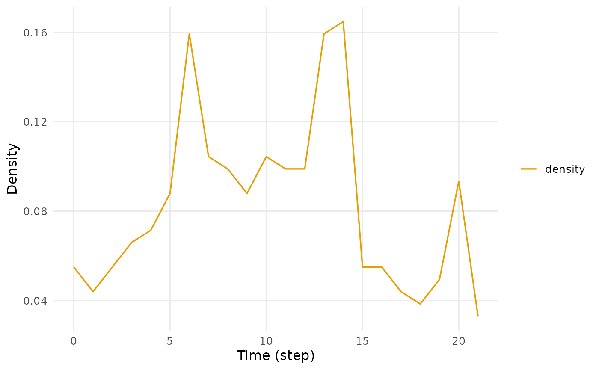

Building and inspecting a temporal network
Source:vignettes/building-networks.Rmd
building-networks.RmdIn this vignette we build temporal networks from the four kinds of
relational log that dynet() reads, inspect the objects, and
qualify their clock with sessions, observation windows and vertex
activity spells. vignette("dynet") follows one network from
construction through measurement.
The four log formats
Dynet provides a single constructor,
dynet(), for interval, contact, threaded, and co-presence
logs. These formats represent different ways of observing interactions
and their timing. Format selection depends on the constructor arguments
and the identification of timing variables, as described below.
Interval logs
An interval log records the onset and termination of each observed relation. Each row defines a relational spell whose duration is the time for which the tie is active.
school_contacts is a simulated interval log of
face-to-face interactions among fourteen named students over
approximately three weeks. The supplied variables from and
to identify the initiating and receiving students,
respectively, and thus define directed relational endpoints. The
supplied variables start and end record onset
and termination in days elapsed since the beginning of the observation
period. Time is continuous on this scale, so an interaction may begin
and end within the same day.
head(school_contacts, 4)
#> from to start end
#> 1 Jonas Dan 0.00 1.10
#> 2 Gita Ana 0.14 0.98
#> 3 Leo Mira 0.15 0.42
#> 4 Leo Iris 0.15 0.96The network is constructed by passing the log to
dynet(). The print method reports the format and direction
of the network, the numbers of vertices, spells and distinct pairs, the
observed range and the measurement grid, followed by the first
spells.
school <- dynet(school_contacts)
school
#> # Temporal network (interval format, directed) | a cograph netobject
#> # 14 vertices | 240 edge spells | 110 distinct pairs
#> # observed from 0 to 21.52 step, binned every 1
#>
#> from to start end duration weight
#> Jonas Dan 0.00 1.10 1.10 1
#> Gita Ana 0.14 0.98 0.84 1
#> Leo Mira 0.15 0.42 0.27 1
#> Leo Iris 0.15 0.96 0.81 1
#> Kira Ben 0.33 0.69 0.36 1
#> Leo Iris 0.38 0.50 0.12 1
#> # 234 more spells. summary() describes the network; plot() draws it.Column names need not be specified explicitly unless they differ from
the recognized aliases or are otherwise ambiguous. By default,
dynet() matches column names against a predefined alias
table using case-insensitive comparison. Thus, from and
to, sender and receiver, and
source and target are interpreted equivalently
as the two relational endpoints, while start and
end may likewise be supplied as onset and
terminus. A duration column can be provided in
place of end.
During construction, dynet() standardizes these inputs
and derives additional variables where necessary. For the present data,
duration is computed as end - start. The
constructor also assigns a weight of 1 to every spell
because the input log contains no variable representing multiplicity or
repeated occurrence.
The 240 spells fall on 110 distinct ordered pairs. With vertices there are ordered pairs, so approximately 60% of the possible ties were realised at least once during the three-week observation period. The aggregated graph is therefore dense; the remainder of this vignette addresses how much of that connectivity is present at any given time.
Contact logs
A contact log records a single timestamp per relation and no
termination time. Each relation is an instantaneous event, so the
network is a contact sequence in which every spell has zero duration.
forum_posts is a simulated log of posts in a course forum.
Each row records a sender, a receiver, a POSIXct timestamp
and the thread to which the post belongs.
head(forum_posts, 3)
#> sender receiver timestamp thread
#> 1 student_14 student_05 2024-09-02 19:59:20 thread_47
#> 2 student_10 student_05 2024-09-03 13:24:23 thread_47
#> 3 teacher_A student_09 2024-09-03 16:31:58 thread_11To read the log as a contact sequence, dynet() is called
with time naming the timestamp column.
clicks <- dynet(forum_posts, time = "timestamp")
clicks
#> # Temporal network (contact format, directed) | a cograph netobject
#> # 20 vertices | 241 edge spells | 172 distinct pairs
#> # observed from 0 to 54.96387 days, binned every 1
#>
#> from to start end duration weight
#> student_14 student_05 0.0000000 0.0000000 0 1
#> student_10 student_05 0.7257216 0.7257216 0 1
#> teacher_A student_09 0.8559934 0.8559934 0 1
#> student_04 student_05 1.1715344 1.1715344 0 1
#> student_02 student_09 1.2382611 1.2382611 0 1
#> student_06 teacher_A 1.9797595 1.9797595 0 1
#> # 235 more spells. summary() describes the network; plot() draws it.The 241 posts become 241 instantaneous spells among 20 vertices on
172 of the 380 possible ordered pairs. Calendar times are converted to
elapsed time from the first event, in a unit chosen automatically to
suit the span; here the span is approximately 55 days, so the unit is
days and the default bin width is one day. Numeric input is left
unchanged and reported in the unit step.
Threaded logs
Forum, chat and email logs likewise carry a timestamp and no
termination time. Reading them as contact sequences discards the fact
that a post remains part of the conversation for as long as the
conversation continues. Saqr and Nouri (2020) proposed a rule for
deriving a duration: a post is active from the moment it is written
until the last post in its thread. Formally, a post at time
in thread
becomes the spell
.
A post that provoked a long exchange therefore remains active longer
than one that did not, and the last post of a thread has zero duration.
This rule is applied by calling dynet() with
thread naming the thread column; nodes
optionally supplies a table of vertex attributes.
forum <- dynet(forum_posts, thread = "thread", nodes = forum_people)
forum
#> # Temporal network (threaded format, directed) | a cograph netobject
#> # 20 vertices | 241 edge spells | 172 distinct pairs
#> # observed from 0 to 54.96387 days, binned every 1
#> # vertex attributes: role, achievement
#>
#> from to start end duration weight thread
#> student_14 student_05 0.0000000 2.296969 2.296969 1 thread_47
#> student_10 student_05 0.7257216 2.296969 1.571247 1 thread_47
#> teacher_A student_09 0.8559934 3.235993 2.380000 1 thread_11
#> student_04 student_05 1.1715344 2.296969 1.125435 1 thread_47
#> student_02 student_09 1.2382611 3.235993 1.997732 1 thread_11
#> student_06 teacher_A 1.9797595 3.235993 1.256234 1 thread_11
#> # 235 more spells. summary() describes the network; plot() draws it.The network has the same 241 spells, 20 vertices and 172 pairs as the
contact reading, but each spell now has a positive duration, except for
the 62 spells that close their 62 threads, and each carries its thread
label. The two readings differ in the share of the observation period
that ties occupy. To compare them, summary() is called on
both networks with temporal_density set to
TRUE. This row is opt-in because it integrates over every
ordered pair and its cost is quadratic in the number of vertices.
summary(clicks, temporal_density = TRUE)
#> property value
#> 1 format contact
#> 2 directed yes
#> 3 vertices 20
#> 4 edge spells 241
#> 5 distinct pairs 172
#> 6 time unit days
#> 7 observed from 0
#> 8 observed to 54.96387
#> 9 span 54.96387
#> 10 bin width 1
#> 11 time bins 55
#> 12 mean snapshot density 0.0112
#> 13 temporal density 0
#> 14 sessions none
#> 15 vertex attributes none
summary(forum, temporal_density = TRUE)
#> property value
#> 1 format threaded
#> 2 directed yes
#> 3 vertices 20
#> 4 edge spells 241
#> 5 distinct pairs 172
#> 6 time unit days
#> 7 observed from 0
#> 8 observed to 54.96387
#> 9 span 54.96387
#> 10 bin width 1
#> 11 time bins 55
#> 12 mean snapshot density 0.0248
#> 13 temporal density 0.0139
#> 14 sessions none
#> 15 vertex attributes role, achievementThe two density rows measure different quantities. Mean snapshot density is the average, over bins, of the share of ordered pairs with at least one spell active at some time within the bin. Temporal density integrates over time: if denotes the total time during which ordered pair has at least one active spell, the number of ordered pairs and the observed span,
Under the contact reading the mean snapshot density is 0.0112 and the
temporal density is 0: an instantaneous tie is present in a bin but
occupies no time. Under the threaded reading the mean snapshot density
rises to 0.0248, because a post now spans every bin between its writing
and the end of its thread, and the temporal density is 0.0139: summed
over the 172 pairs, ties are active for 290.8 pair-days out of the 380
pairs times 54.96 days available. The thread rule is a modelling
decision. It is the rule under which a forum can be analysed as a
network of spells with positive duration, and it is applied only when
thread is named.
Co-presence logs
A co-presence log is two-mode. It records actors against the
occasions they attended rather than against one another, so ties between
actors must be projected. seminar_attendance records which
student attended which weekly seminar over one term.
head(seminar_attendance, 3)
#> student seminar date
#> 1 s12 week_01 2024-09-03
#> 2 s22 week_01 2024-09-03
#> 3 s23 week_01 2024-09-03To project the log onto ties between actors, dynet() is
called with actor naming the actor column and
group naming the occasion column.
seminars <- dynet(seminar_attendance, actor = "student", group = "seminar")
seminars
#> # Temporal network (copresence format, undirected) | a cograph netobject
#> # 24 vertices | 417 edge spells | 224 distinct pairs
#> # observed from 0 to 77 days, binned every 1
#>
#> from to start end duration weight group
#> s03 s10 0 0 0 1 week_01
#> s03 s12 0 0 0 1 week_01
#> s03 s21 0 0 0 1 week_01
#> s03 s22 0 0 0 1 week_01
#> s03 s23 0 0 0 1 week_01
#> s10 s12 0 0 0 1 week_01
#> # 411 more spells. summary() describes the network; plot() draws it.Every pair of students attending the same seminar becomes one spell,
tagged with the seminar that produced it. An occasion with
attendees contributes
spells, and the 417 spells here are the sum of that quantity over the
term’s seminars. Co-presence is symmetric, so the network is undirected
and directed = TRUE is overridden; the 224 distinct pairs
are 224 of the
unordered pairs, or 81%. The log carries a date and no termination time,
so each seminar contributes instantaneous spells on its day.
Choosing the format
The default format = "auto" selects the threaded reading
when thread is named, the co-presence reading when
actor and group are named, the interval
reading when a termination or duration column is present, and the
contact reading otherwise. The inference follows the arguments supplied,
not the columns present in the data. forum_posts contains a
thread column, but a call that does not name it yields a
contact sequence.
auto <- dynet(forum_posts)
auto
#> # Temporal network (contact format, directed) | a cograph netobject
#> # 20 vertices | 241 edge spells | 172 distinct pairs
#> # observed from 0 to 54.96387 days, binned every 1
#>
#> from to start end duration weight
#> student_14 student_05 0.0000000 0.0000000 0 1
#> student_10 student_05 0.7257216 0.7257216 0 1
#> teacher_A student_09 0.8559934 0.8559934 0 1
#> student_04 student_05 1.1715344 1.1715344 0 1
#> student_02 student_09 1.2382611 1.2382611 0 1
#> student_06 teacher_A 1.9797595 1.9797595 0 1
#> # 235 more spells. summary() describes the network; plot() draws it.To fix the reading explicitly rather than infer it,
format is set to one of "interval",
"contact", "threaded" or
"copresence".
Inspecting the network
To describe a network in a single table, summary() is
called on it. The result has one row per property.
summary(school)
#> property value
#> 1 format interval
#> 2 directed yes
#> 3 vertices 14
#> 4 edge spells 240
#> 5 distinct pairs 110
#> 6 time unit step
#> 7 observed from 0
#> 8 observed to 21.52
#> 9 span 21.52
#> 10 bin width 1
#> 11 time bins 22
#> 12 mean snapshot density 0.0829
#> 13 temporal density not computed
#> 14 sessions none
#> 15 vertex attributes nonevertices is the fixed vertex set. Every result retains a
row for every vertex, so a vertex with no ties in a window appears with
a value of zero rather than being omitted. edge spells
counts the derived spells, one per row of an interval log, and
distinct pairs the ordered pairs on which they fall; 240
spells on 110 pairs indicates that most pairs met more than once.
time unit is step for numeric input and
seconds, minutes, hours or days for calendar input. The observed range
defaults to the first and last event. bin width is the
measurement grid, set by the interval argument, and
time bins is the number of bins covering the observed
range: 22 bins of width 1 cover a span of 21.52.
mean snapshot density is the average, over those 22 bins,
of the share of the 182 ordered pairs in contact within the bin; at
0.0829, approximately one pair in twelve is in contact on an average
day, compared with 60% over the whole period.
temporal density is computed only on request.
To obtain the spell table, as.data.frame() is called on
the network. It returns the spells as constructed, together with the
derived duration and weight columns.
spells <- as.data.frame(school)
head(spells, 4)
#> from to start end duration weight
#> 1 Jonas Dan 0.00 1.10 1.10 1
#> 2 Gita Ana 0.14 0.98 0.84 1
#> 3 Leo Mira 0.15 0.42 0.27 1
#> 4 Leo Iris 0.15 0.96 0.81 1To obtain the vertex table, as.data.frame() is called
with what set to "nodes". For the forum
network, this table carries the attributes supplied through
nodes.
forum_nodes <- as.data.frame(forum, what = "nodes")
head(forum_nodes, 4)
#> name role achievement
#> 1 facilitator Facilitator <NA>
#> 2 student_01 Student Middle
#> 3 student_02 Student Low
#> 4 student_03 Student Highwhat also accepts "bins" for the
measurement grid, "network" for the aggregated edge list,
"observations" for the observation calendar,
"observed_edges" for the spells clipped to that calendar,
and "vertex_spells" for declared vertex activity.
bins <- as.data.frame(school, what = "bins")
head(bins, 4)
#> bin lo hi time closed
#> 1 1 0 1 0 FALSE
#> 2 2 1 2 1 FALSE
#> 3 3 2 3 2 FALSE
#> 4 4 3 4 3 FALSEEach bin extends from lo to hi and is
labelled by its start time. Bins are half-open, as spells
are, with the exception of the last bin, whose closed flag
is TRUE so that an event at the final observed instant is
counted rather than dropped.
pairs <- as.data.frame(school, what = "network")
head(pairs, 4)
#> from to weight
#> 1 Cara Ana 1
#> 2 Dan Ana 2
#> 3 Gita Ana 3
#> 4 Hugo Ana 2The aggregated edge list has one row per ordered pair that was ever
in contact, and its weight is the number of spells on that
pair: Dan contacted Ana twice and Gita contacted Ana three times. This
is the static graph on which a non-temporal analysis would operate.
Direction, loops, weights and attributes
A small hand-constructed log illustrates the remaining constructor
arguments. It has five rows among three vertices, and its fifth row is a
self-tie from A to A. The posts
column records the number of messages each row represents.
tiny <- data.frame(
from = c("A", "B", "A", "C", "A"),
to = c("B", "A", "C", "A", "A"),
start = c(0, 1, 2, 3, 4),
end = c(2, 3, 5, 4, 6),
posts = c(3, 1, 2, 5, 1)
)To build an undirected network with a weight per event,
dynet() is called with directed set to
FALSE and weight naming the multiplicity
column. A column named weight, weights or
strength is detected without being named, and a message
reports the choice.
undirected <- dynet(tiny, directed = FALSE, weight = "posts")
#> Dropped 1 self-loop event(s). Use loops = TRUE to keep them.
undirected
#> # Temporal network (interval format, undirected) | a cograph netobject
#> # 3 vertices | 4 edge spells | 2 distinct pairs
#> # observed from 0 to 5 step, binned every 1
#>
#> from to start end duration weight
#> A B 0 2 2 3
#> A B 1 3 2 1
#> A C 2 5 3 2
#> A C 3 4 1 5The five rows become four spells on two pairs. In an undirected
network the pair is unordered, so B -> A is folded onto
A -> B while retaining its own onset and termination,
and the two spells on that pair overlap in
.
The self-tie is dropped with a message, because a loop is not a relation
between two actors. The weight column now carries the value
of posts. To retain self-ties, loops is set to
TRUE; a retained loop adds two to the degree of its vertex,
once as sender and once as receiver.
with_loops <- dynet(tiny, loops = TRUE)
#> Keeping 1 self-loop event(s); each adds two to its vertex's degree.
with_loops
#> # Temporal network (interval format, directed) | a cograph netobject
#> # 3 vertices | 5 edge spells | 5 distinct pairs
#> # observed from 0 to 6 step, binned every 1
#>
#> from to start end duration weight posts
#> A B 0 2 2 1 3
#> B A 1 3 2 1 1
#> A C 2 5 3 1 2
#> C A 3 4 1 1 5
#> A A 4 6 2 1 1With direction retained and the loop kept, the same five rows are
five spells on five distinct ordered pairs, and posts is
carried as a spell attribute because no weight was named.
Every measurement function tiles the observation period into bins of
a default width. To set that width, interval is specified
in the network’s time unit.
tiny_dn <- dynet(tiny, interval = 2)
#> Dropped 1 self-loop event(s). Use loops = TRUE to keep them.
summary(tiny_dn)
#> property value
#> 1 format interval
#> 2 directed yes
#> 3 vertices 3
#> 4 edge spells 4
#> 5 distinct pairs 4
#> 6 time unit step
#> 7 observed from 0
#> 8 observed to 5
#> 9 span 5
#> 10 bin width 2
#> 11 time bins 3
#> 12 mean snapshot density 0.3333
#> 13 temporal density not computed
#> 14 sessions none
#> 15 vertex attributes noneThe span of 5 is covered by three bins of width 2. The mean snapshot density of 0.3333 can be verified directly: the three bins contain two, three and one active ordered pairs out of the possible, and the mean of , and is .
To attach vertex attributes, a table is passed to nodes;
the key column is detected by name. To designate one attribute as the
vertex partition, it is named in groups. The partition is
stored as a groups column, and
cograph::splot() colours by it without a further
argument.
roles <- dynet(forum_posts, thread = "thread",
nodes = forum_people, groups = "role")
role_nodes <- as.data.frame(roles, what = "nodes")
head(role_nodes, 4)
#> name role achievement groups
#> 1 facilitator Facilitator <NA> Facilitator
#> 2 student_01 Student Middle Student
#> 3 student_02 Student Low Student
#> 4 student_03 Student High StudentAn attribute is what makes group-level questions possible. To count
ties within and between the groups defined by an attribute,
mixing() is called with attribute naming the
attribute. The result has one row per ordered pair of groups per bin,
and its value is the number of ordered pairs of vertices in
those two groups with an active tie in the bin.
role_mixing <- mixing(roles, attribute = "role")
head(role_mixing, 4)
#> # Mixing by role (graph-level)
#> # 55 time points, 1 per bin | time in days
#> # measures: Facilitator -> Facilitator, Student -> Facilitator, Teacher -> Facilitator, Facilitator -> Student
#> # first 4 of 495 rows
#> # active binary-dyad counts between vertex groups per time bin
#> time measure value from_group to_group
#> 0 Facilitator -> Facilitator 0 Facilitator Facilitator
#> 0 Student -> Facilitator 0 Student Facilitator
#> 0 Teacher -> Facilitator 0 Teacher Facilitator
#> 0 Facilitator -> Student 0 Facilitator StudentThree roles give nine ordered group pairs, and 55 daily bins give the 495 rows reported in the header. In the first bin no facilitator was yet involved.
Sessions
A session is a segment of the observation period that a
time-respecting path may not cross, although the clock runs continuously
through it: a course, a term, a class period, a day of a conference.
Contacts in different sessions remain ordered in time, but a chain of
contacts spanning two sessions is not treated as a path, because
whatever passed along it would have had to persist across the break. To
declare sessions, a column is named with session. When the
log has no such column, we cut the time axis instead: to assign each
contact to the week in which it started, we call
set_tie_sessions() with breaks at days 7 and
14 and labels for the three weeks.
sessioned <- set_tie_sessions(school, breaks = c(7, 14),
labels = c("week_1", "week_2", "week_3"))
summary(sessioned)
#> property value
#> 1 format interval
#> 2 directed yes
#> 3 vertices 14
#> 4 edge spells 240
#> 5 distinct pairs 110
#> 6 time unit step
#> 7 observed from 0
#> 8 observed to 21.52
#> 9 span 21.52
#> 10 bin width 1
#> 11 time bins 22
#> 12 mean snapshot density 0.0829
#> 13 temporal density not computed
#> 14 sessions 3
#> 15 vertex attributes noneThe network is otherwise unchanged; the summary now reports three
sessions. Every function that takes time also takes
sessions, with three settings that change what is computed
rather than how the result is laid out. To find the earliest
time-respecting path from one student to every other (Kempe, Kleinberg
and Kumar, 2002), paths() is called with from
for the source and sessions for the setting, and the result
is summarised.
collapsed <- paths(sessioned, from = "Ana", sessions = "collapse")
summary(collapsed)
#> property value
#> 1 source Ana
#> 2 direction forward
#> 3 reachable 13
#> 4 reachable share 1
#> 5 median latency 7.51
#> 6 max latency 11.66
#> 7 median hops 2
#> 8 max hops 4With "collapse" the session labels are ignored and the
period is treated as a single stream, which is equivalent to an
unsessioned network. Ana reaches all thirteen other students, at a
median latency of 7.51 days and within four hops.
inside <- paths(sessioned, from = "Ana", sessions = "bounded")
summary(inside)
#> property value
#> 1 source Ana
#> 2 direction forward
#> 3 reachable 13
#> 4 reachable share 1
#> 5 median latency 8.21
#> 6 max latency 13.21
#> 7 median hops 2
#> 8 max hops 5With "bounded" every path must remain within one
session: the search is run within each session and, for every
destination, the best result across sessions is retained. Ana still
reaches every student, but by routes that never cross a week boundary:
the median latency rises from 7.51 to 8.21 days, the maximum from 11.66
to 13.21 days, and the longest route from four hops to five. Some of the
earliest routes in the collapsed search used contacts on both sides of a
week boundary and are no longer admissible.
per_session <- paths(sessioned, from = "Ana", sessions = "separate")
summary(per_session)
#> session property value
#> 1 week_1 source Ana
#> 2 week_1 direction forward
#> 3 week_1 reachable 6
#> 4 week_1 reachable share 0.462
#> 5 week_1 median latency 6.36
#> 6 week_1 max latency 6.96
#> 7 week_1 median hops 1.5
#> 8 week_1 max hops 2
#> 9 week_2 source Ana
#> 10 week_2 direction forward
#> 11 week_2 reachable 13
#> 12 week_2 reachable share 1
#> 13 week_2 median latency 3.36
#> 14 week_2 max latency 6.19
#> 15 week_2 median hops 3
#> 16 week_2 max hops 6
#> 17 week_3 source Ana
#> 18 week_3 direction forward
#> 19 week_3 reachable 5
#> 20 week_3 reachable share 0.385
#> 21 week_3 median latency 6.42
#> 22 week_3 max latency 6.67
#> 23 week_3 median hops 2
#> 24 week_3 max hops 3With "separate" each session is searched and reported on
its own rows. Within week 1 Ana reaches 6 of the 13 other students
(share 0.462), within week 2 all 13, and within week 3 only 5 (share
0.385). Week 2 is the week in which the class is most connected: two of
the three densest days of the daily density series in
vignette("dynet"), days 13 and 14, fall within it, and its
routes are also the longest, up to six hops. "bounded" is
the default. On a network without sessions there is nothing to bound, so
"bounded" and "collapse" coincide and the
default incurs no cost. "separate" requires a session
column and raises an error of class dynet_bad_input when
none is present.
Observation windows
The observed range defaults to the first and last event in the log.
This default treats the data as if observation began with the first
contact and ended with the last, which rarely corresponds to how a study
was conducted. The observed range matters because it is the denominator
of every rate and the horizon of every path search: a density is a share
of pair-time, and a path search terminates at the end of observation.
When the study period is known, it should be declared by setting
observation_start and observation_end.
bounded <- dynet(school_contacts, observation_start = 0, observation_end = 14)
summary(bounded)
#> property value
#> 1 format interval
#> 2 directed yes
#> 3 vertices 14
#> 4 edge spells 240
#> 5 distinct pairs 110
#> 6 time unit step
#> 7 observed from 0
#> 8 observed to 14
#> 9 span 14
#> 10 bin width 1
#> 11 time bins 14
#> 12 mean snapshot density 0.0922
#> 13 temporal density not computed
#> 14 sessions none
#> 15 vertex attributes noneThe span is 14 rather than 21.52, giving 14 bins rather than 22, and
the mean snapshot density is 0.0922 rather than 0.0829. The spells are
unchanged; the first two weeks are simply denser than the third, and
averaging over them alone yields a higher value. The bounds clip
exposure and do not filter the data: as.data.frame() still
returns every spell as supplied. A spell of positive duration
contributes its half-open intersection with the window, and an
instantaneous event on either limit is retained.
Observation is often interrupted: a holiday, a system outage, a gap
between data exports. To declare the observed periods, a table of their
starts and ends is passed to observation_spells;
overlapping and adjacent periods are merged. To read the calendar back,
as.data.frame() is called with what set to
"observations".
gapped <- dynet(
school_contacts,
observation_spells = data.frame(start = c(0, 12), end = c(8, 21))
)
as.data.frame(gapped, what = "observations")
#> observation start end duration instant
#> 1 1 0 8 8 FALSE
#> 2 2 12 21 9 FALSE
summary(gapped)
#> property value
#> 1 format interval
#> 2 directed yes
#> 3 vertices 14
#> 4 edge spells 240
#> 5 distinct pairs 110
#> 6 time unit step
#> 7 observed from 0
#> 8 observed to 21
#> 9 span 21
#> 10 bin width 1
#> 11 time bins 17
#> 12 mean snapshot density 0.0824
#> 13 temporal density not computed
#> 14 sessions none
#> 15 vertex attributes noneThe two periods cover 8 and 9 days and give 17 bins rather than the 21 that a hull from 0 to 21 would give: the grid restarts within each period and never places a bin in the gap. Exposure is the sum of the two durations rather than their hull, so the four unobserved days do not inflate any denominator, and an event falling in the gap is not counted.
The calendar can be modified after construction. To replace it,
set_observations() is called with start and
end. To restore the implicit continuous window,
clear_observations() is called.
narrowed <- set_observations(school, start = 2, end = 10)
as.data.frame(narrowed, what = "observations")
#> observation start end duration instant
#> 1 1 2 10 8 FALSE
continuous <- clear_observations(gapped)
as.data.frame(continuous, what = "observations")
#> observation start end duration instant
#> 1 1 0 21.52 21.52 FALSEVertex activity spells
Observation windows state when the study was in progress. Vertex
activity spells state when a vertex was eligible to have ties at all: a
student who enrolled late, a participant who left, a member present only
in some terms. The distinction matters for every per-vertex measure,
because a vertex with no contacts in a bin should score zero only if it
could have had contacts. To declare activity, a table with
node, start and end is passed to
vertex_spells. A vertex with no row in the table is
eligible throughout.
arrivals <- data.frame(
node = c("Ana", "Ben"),
start = c(0, 7),
end = c(21.52, 21.52)
)
scheduled <- dynet(school_contacts, vertex_spells = arrivals)
as.data.frame(scheduled, what = "vertex_spells")
#> vertex_spell node start end duration instant session onset_censored
#> 1 1 Ana 0 21.52 21.52 FALSE <NA> FALSE
#> 2 2 Ben 7 21.52 14.52 FALSE <NA> FALSE
#> terminus_censored
#> 1 FALSE
#> 2 FALSEBen is now eligible from day 7. He retains a row in every bin, but
the bins before his arrival report NA rather than zero,
which distinguishes having had no contacts from not having been present.
To observe this, dyn_centrality() is called with
measure set to "degree" on the two
networks.
school_degree <- dyn_centrality(school, measure = "degree")
head(school_degree, 4)
#> # Degree (node-level)
#> # 14 vertices | 22 time points, 1 per bin | time in step
#> # first 4 of 308 rows
#> time node measure value
#> 0 Ana degree 1
#> 0 Ben degree 1
#> 0 Cara degree 1
#> 0 Dan degree 1
scheduled_degree <- dyn_centrality(scheduled, measure = "degree")
head(scheduled_degree, 4)
#> # Degree (node-level)
#> # 14 vertices | 22 time points, 1 per bin | time in step
#> # first 4 of 308 rows
#> time node measure value
#> 0 Ana degree 1
#> 0 Ben degree NA
#> 0 Cara degree 1
#> 0 Dan degree 1The distinction affects every per-vertex summary, because the bins
before arrival are no longer averaged in as zeros. To reduce each series
to one row per vertex, summary() is called on it.
school_degree_summary <- summary(school_degree)
head(school_degree_summary, 3)
#> node measure n mean sd min max peak_time
#> 1 Ana degree 22 2.181818 2.015095 0 7 6
#> 2 Ben degree 22 2.000000 1.234427 0 4 4
#> 3 Cara degree 22 2.227273 1.342770 0 5 4
scheduled_degree_summary <- summary(scheduled_degree)
head(scheduled_degree_summary, 3)
#> node measure n mean sd min max peak_time
#> 1 Ana degree 22 2.181818 2.015095 0 7 6
#> 2 Ben degree 15 2.133333 1.125463 0 4 11
#> 3 Cara degree 22 2.227273 1.342770 0 5 4Ana is unchanged at a mean degree of 2.18 over 22 bins. Ben’s mean rises from 2.00 over 22 bins to 2.13 over the 15 bins in which he was eligible, his standard deviation falls from 1.23 to 1.13, and his peak moves from day 4, which now precedes his arrival, to day 11. The eleven contacts recorded for Ben before day 7 remain in the spell table; the declaration states only that the days before his arrival were not opportunities for him.
The declaration can be edited. To replace the table,
set_vertex_spells() is called; to extend it,
add_vertex_spells() is called.
activity <- set_vertex_spells(school, arrivals)
extended <- add_vertex_spells(activity,
data.frame(node = "Cara", start = 3, end = 12))
as.data.frame(extended, what = "vertex_spells")
#> vertex_spell node start end duration instant session onset_censored
#> 1 1 Ana 0 21.52 21.52 FALSE <NA> FALSE
#> 2 2 Ben 7 21.52 14.52 FALSE <NA> FALSE
#> 3 3 Cara 3 12.00 9.00 FALSE <NA> FALSE
#> terminus_censored
#> 1 FALSE
#> 2 FALSE
#> 3 FALSEEditing a network
Every editing function returns a new network and leaves its input
unchanged. Each edit rebuilds the spell table and the
cograph projection together, so a temporal network is
edited through these functions and not through cograph’s
static setters, which carry no temporal information.
To add a vertex, add_nodes() is called with a table of
names and attributes. To add a tie, add_ties() is called
with a table of spells; each tie endpoint must already exist as a
vertex.
step1 <- add_nodes(school, data.frame(name = "Nova", role = "exchange"))
step2 <- add_ties(step1, data.frame(
from = "Ana", to = "Nova", start = 4, end = 6
))
summary(step2)
#> property value
#> 1 format interval
#> 2 directed yes
#> 3 vertices 15
#> 4 edge spells 241
#> 5 distinct pairs 111
#> 6 time unit step
#> 7 observed from 0
#> 8 observed to 21.52
#> 9 span 21.52
#> 10 bin width 1
#> 11 time bins 22
#> 12 mean snapshot density 0.0723
#> 13 temporal density not computed
#> 14 sessions none
#> 15 vertex attributes roleThe edited network has 15 vertices, 241 spells, 111 distinct pairs
and a role attribute, which every original vertex holds as
NA. Its mean snapshot density is 0.0723, lower than the
0.0829 of the original although a tie was added: the number of ordered
pairs rose from 182 to
, so the same ties are shares of a
larger denominator. Adding a vertex changes every density in the
network, which is why the vertex set is fixed at construction and edited
deliberately. The original is unchanged.
summary(school)
#> property value
#> 1 format interval
#> 2 directed yes
#> 3 vertices 14
#> 4 edge spells 240
#> 5 distinct pairs 110
#> 6 time unit step
#> 7 observed from 0
#> 8 observed to 21.52
#> 9 span 21.52
#> 10 bin width 1
#> 11 time bins 22
#> 12 mean snapshot density 0.0829
#> 13 temporal density not computed
#> 14 sessions none
#> 15 vertex attributes noneTo remove a tie, remove_ties() is called with the
endpoints and the onset time. To rename vertices,
rename_nodes() is called with a named vector mapping old
names to new.
step3 <- remove_ties(step2, from = "Ana", to = "Nova", start = 4)
summary(step3)
#> property value
#> 1 format interval
#> 2 directed yes
#> 3 vertices 15
#> 4 edge spells 240
#> 5 distinct pairs 110
#> 6 time unit step
#> 7 observed from 0
#> 8 observed to 21.52
#> 9 span 21.52
#> 10 bin width 1
#> 11 time bins 22
#> 12 mean snapshot density 0.0719
#> 13 temporal density not computed
#> 14 sessions none
#> 15 vertex attributes role
renamed <- rename_nodes(step2, c(Nova = "Nova B."))
renamed_nodes <- as.data.frame(renamed, what = "nodes")
tail(renamed_nodes, 3)
#> name role
#> 13 Mira <NA>
#> 14 Nils <NA>
#> 15 Nova B. exchangeRemoving the tie returns the spell and pair counts to 240 and 110
while Nova remains as a vertex with no ties, and the density settles at
0.0719, the original 15.09 mean edges per bin over 210 pairs. To
restrict a network to a subset of its vertices,
induce_subgraph() is called with nodes for the
vertex names; ties instead accepts a condition on the spell
table.
five <- induce_subgraph(school, nodes = c("Ana", "Ben", "Cara", "Dan", "Eve"))
summary(five)
#> property value
#> 1 format interval
#> 2 directed yes
#> 3 vertices 5
#> 4 edge spells 18
#> 5 distinct pairs 11
#> 6 time unit step
#> 7 observed from 3.17
#> 8 observed to 21.33
#> 9 span 18.16
#> 10 bin width 1
#> 11 time bins 19
#> 12 mean snapshot density 0.0684
#> 13 temporal density not computed
#> 14 sessions none
#> 15 vertex attributes noneThe five students share 18 spells on 11 of their 20 ordered pairs.
The observed range narrows from 0 to 21.52 to 3.17 to 21.33, because the
subgraph’s range defaults to its own first and last contact; to retain
the original study period, it must be declared with
observation_start and observation_end.
Descriptive measures
A temporal network is measured in windows. The observation period is
divided into bins, the spells active in each bin are aggregated into a
static snapshot, a static measure is computed on every snapshot, and the
result is a time series. To measure graph-level structure in each bin,
metrics() is called with measure naming the
statistics. Several measures are returned stacked in one data frame with
a measure column.
basics <- metrics(school, measure = c("density", "edges", "active_nodes"))
head(basics, 6)
#> # Graph structure (graph-level)
#> # 22 time points, 1 per bin | time in step
#> # measures: density, edges, active_nodes
#> # first 6 of 66 rows
#> time measure value
#> 0 density 0.05494505
#> 0 edges 10.00000000
#> 0 active_nodes 13.00000000
#> 1 density 0.04395604
#> 1 edges 8.00000000
#> 1 active_nodes 8.00000000edges is the number of ordered pairs with at least one
active spell in the bin, density divides it by the 182
possible pairs, and active_nodes is the number of vertices
with at least one tie. On day 0, 10 ties among 13 of the 14 students
give a density of 0.055; on day 1, 8 ties among 8 students give
0.044.
To reduce each series to one row, summary() is called on
the result. The table reports the mean, standard deviation, range and
peak time of each measure.
six <- metrics(school, measure = c("density", "edges", "active_nodes",
"components", "transitivity",
"reciprocity"))
summary(six)
#> measure n mean sd min max peak_time
#> 1 active_nodes 22 12.13636364 2.07698166 7.00000000 14.0000000 5
#> 2 components 22 3.59090909 2.38365647 1.00000000 9.0000000 21
#> 3 density 22 0.08291708 0.03929021 0.03296703 0.1648352 14
#> 4 edges 22 15.09090909 7.15081807 6.00000000 30.0000000 14
#> 5 reciprocity 22 0.14503815 0.13886108 0.00000000 0.4666667 14
#> 6 transitivity 22 0.11496262 0.12515367 0.00000000 0.4000000 11Density averages 0.083 over the 22 daily bins and peaks at 0.165 on
day 14, the day with the most ties (30). On an average day 12.1 of the
14 students have at least one contact, and on every day at least 7 do.
components counts the weakly connected components of the
snapshot, ignoring direction and counting isolates as components of size
one. It averages 3.6, equals 1 on day 14, when the 30 ties join the
whole class into one connected snapshot, and peaks at 9 on day 21, the
truncated final half-day, when 6 ties leave 7 students isolated.
reciprocity is the edgewise measure, the share of arcs
in the bin for which
is also present; it averages 0.145 and reaches 0.467 on day 14, so even
on the busiest day fewer than half the contacts were returned within the
day. transitivity is the share of two-paths
closed by an arc
,
the weak convention of sna::gtrans(); it averages 0.115 and
peaks at 0.4 on day 11. Both cohesion measures are low because a daily
snapshot of a classroom is sparse, and both are computed on the snapshot
as a static graph.
step and window are separate arguments.
step is the interval between measurements and
window the length of time each measurement covers, counted
forward from the measurement time. Equal values tile the period into
disjoint bins, which is the default. A window wider than
step yields a rolling series in which successive windows
overlap.
rolling <- metrics(school, measure = "density", step = 1, window = 7)
head(rolling, 4)
#> # Density (graph-level)
#> # 22 time points, step 1, window 7 (rolling) | time in step
#> # first 4 of 22 rows
#> time measure value
#> 0 density 0.3241758
#> 1 density 0.3461538
#> 2 density 0.3571429
#> 3 density 0.3791209The first rolling value, 0.324, is the share of the 182 ordered pairs
in contact at any time during the seven days from day 0, namely 59
pairs, compared with 10 pairs and 0.055 in the first day alone. A
rolling window trades temporal resolution for a denser, less noisy
snapshot. To plot a series, plot() is called on it.

The measures above record presence within a bin: a pair counts once
regardless of how briefly or how often it was in contact. Two measures
integrate over time instead. temporal_density is the
occupied share of pair-time within the window, the quantity
defined above but computed per window. onset_intensity is
the number of spells starting in the window divided by the eligible
pair-time,
times the window length, and is therefore a rate of tie formation per
unit of opportunity.
integrated <- metrics(school, measure = c("temporal_density", "onset_intensity"),
step = 7, window = 7)
integrated
#> # Graph structure (graph-level)
#> # 4 time points, 7 per bin | time in step
#> # measures: temporal_density, onset_intensity
#> time measure value
#> 0 temporal_density 0.024285714
#> 0 onset_intensity 0.060439560
#> 7 temporal_density 0.038602826
#> 7 onset_intensity 0.083987441
#> 14 temporal_density 0.023524333
#> 14 onset_intensity 0.043956044
#> 21 temporal_density 0.001342229
#> 21 onset_intensity 0.000000000In each full week the eligible pair-time is pair-days. The onset intensities of 0.0604, 0.0840 and 0.0440 therefore correspond to 77, 107 and 56 spells starting in the three weeks, which sum to the 240 spells of the log; the final bin, from day 21 to 21.52, contains no new spell. Occupied pair-time is highest in the second week, at 0.0386, or 49.2 pair-days of contact out of 1274 available, and falls to 0.0013 in the final partial bin. Compared with the mean snapshot density of 0.083, the temporal density of approximately 0.03 indicates that a pair in contact at some time on a given day is, on average, in contact for only a fraction of that day.
To list the ties present in one bin rather than a statistic
summarising them, snapshots() is called with
at for the time. Without at the whole grid is
returned, one row per tie per bin.
at_five <- snapshots(school, at = 5)
at_five
#> # Snapshot edges | 1 bin | 16 tie rows | time in step
#> time from to weight n_spells
#> 1 5 Kira Leo 1 1
#> 2 5 Kira Gita 1 1
#> 3 5 Leo Cara 1 1
#> 4 5 Leo Finn 1 1
#> 5 5 Mira Ana 1 1
#> 6 5 Nils Ben 1 1
#> 7 5 Nils Eve 1 1
#> 8 5 Ben Eve 1 1
#> 9 5 Ben Finn 1 1
#> 10 5 Cara Kira 1 1
#> # 6 more rows. summary() counts them by bin.The 16 rows are the 16 ties counted by edges on day 5,
each with its weight and the number of spells that produced it.
To count the ties that formed and dissolved in each bin,
events() is called on the network. A formation is a spell
onset and a dissolution a spell termination.
changes <- events(school)
head(changes, 6)
#> # Edge dynamics (graph-level)
#> # 22 time points, 1 per bin | time in step
#> # measures: formation, dissolution
#> # first 6 of 44 rows
#> time measure value
#> 0 formation 11
#> 0 dissolution 7
#> 1 formation 4
#> 1 dissolution 6
#> 2 formation 8
#> 2 dissolution 6In the first bin 11 ties formed and 7 dissolved, so contact was accumulating; in the second, 4 formed and 6 dissolved.
Duration is what distinguishes an interval log from a contact
sequence. To measure how long ties lasted, durations() is
called. The default measure reports, for each ordered pair,
the number of spells (events), their summed duration
(total) and their mean duration (mean).
unit selects the entity to which a duration belongs:
"pair" for a dyad’s whole history, "spell" for
the individual episodes, "vertex_activity" and
"vertex_spell" for vertex presence, and
"node_ties" for the tie time incident to each vertex.
tie_durations <- durations(school)
head(tie_durations, 6)
#> # Relationship duration (edge-level)
#> # time in step
#> # first 6 of 330 rows
#> # durations in step
#> from to measure value
#> Ana Cara events 1
#> Ana Dan events 3
#> Ana Gita events 5
#> Ana Iris events 1
#> Ana Jonas events 4
#> Ana Kira events 1Ana contacted Gita five times and Jonas four times over the three weeks, and Cara, Iris and Kira once each. The 110 pairs times three measures give the 330 rows reported in the header.
spell_durations <- durations(school, unit = "spell")
head(spell_durations, 4)
#> # Relationship duration (edge-level)
#> # time in step
#> # first 4 of 240 rows
#> # durations in step
#> from to raw_spell measure value
#> Ana Cara 71 duration 0.10
#> Ana Dan 143 duration 0.32
#> Ana Dan 168 duration 0.51
#> Ana Dan 228 duration 0.19At the spell level there is one row per episode, 240 in all, each identified by its row in the source log. Ana’s three contacts with Dan lasted 0.32, 0.51 and 0.19 days.
node_durations <- durations(school, unit = "node_ties", mode = "all")
head(node_durations, 4)
#> # Incident tie duration (node-level)
#> # 14 vertices | mode all | time in step
#> # first 4 of 28 rows
#> # durations in step
#> node measure value
#> Ana events 36
#> Ben events 34
#> Cara events 35
#> Dan events 35At the vertex level events counts the spells incident to
each student in either direction: Ana took part in 36 contacts, Ben in
34.
Collapsing to a static network
To reduce a period of the temporal network to a static weighted
network, collapse_network() is called with
start and end delimiting the period. The
result is a cograph network with one row per pair that was
in contact during the period, carrying every weighting the package can
compute, so the weighting is selected by name rather than
recomputed.
flat <- collapse_network(school, start = 0, end = 7)
flat
#> # Collapsed temporal network | 14 vertices | 59 edges | weight: binary
#> # 0 to 7 step
#> from to binary union_duration total_duration duration_fraction spell_count
#> Ana Cara 1 0.10 0.10 0.01428571 1
#> Ana Gita 1 0.33 0.33 0.04714286 1
#> Ana Jonas 1 1.44 1.44 0.20571429 3
#> Ana Mira 1 0.41 0.41 0.05857143 1
#> Ben Eve 1 1.58 1.58 0.22571429 2
#> Ben Finn 1 0.23 0.23 0.03285714 1
#> weight_sum weighted_duration latest_weight first last activity.duration
#> 1 0.10 1 6.67 6.77 0.10
#> 1 0.33 1 6.57 6.90 0.33
#> 3 1.44 1 2.12 7.00 1.44
#> 1 0.41 1 6.36 6.77 0.41
#> 2 1.58 1 3.61 6.24 1.58
#> 1 0.23 1 4.91 5.14 0.23
#> activity.count
#> 1
#> 1
#> 3
#> 1
#> 2
#> 1The first week contains 59 pairs, the same 59 that gave the first
rolling density of 0.324. For each pair the table gives the presence
indicator (binary), the calendar time with at least one
active spell (union_duration), the summed spell time
(total_duration), the share of the seven days occupied
(duration_fraction), the number of spells and the weight
sums, and the times of the first and last contact. Ana and Jonas were in
contact three times during the week, for 1.44 days in total, or 21% of
the week, between days 2.12 and 7.00; the two durations coincide because
their spells do not overlap. To select the weighting that
cograph draws and measures, weight is set.
first_week <- collapse_network(school, start = 0, end = 7,
weight = "union_duration")
first_week
#> # Collapsed temporal network | 14 vertices | 59 edges | weight: union_duration
#> # 0 to 7 step
#> from to binary union_duration total_duration duration_fraction spell_count
#> Ana Cara 1 0.10 0.10 0.01428571 1
#> Ana Gita 1 0.33 0.33 0.04714286 1
#> Ana Jonas 1 1.44 1.44 0.20571429 3
#> Ana Mira 1 0.41 0.41 0.05857143 1
#> Ben Eve 1 1.58 1.58 0.22571429 2
#> Ben Finn 1 0.23 0.23 0.03285714 1
#> weight_sum weighted_duration latest_weight first last activity.duration
#> 1 0.10 1 6.67 6.77 0.10
#> 1 0.33 1 6.57 6.90 0.33
#> 3 1.44 1 2.12 7.00 1.44
#> 1 0.41 1 6.36 6.77 0.41
#> 2 1.58 1 3.61 6.24 1.58
#> 1 0.23 1 4.91 5.14 0.23
#> activity.count
#> 1
#> 1
#> 3
#> 1
#> 2
#> 1A collapsed network is the appropriate object for a static method: a layout, a community detection, a comparison with a static reference. What it no longer retains is the order of events, the duration of each episode and the existence of a time-respecting path, which are available only in the temporal object.
References
Holme, P., & Saramäki, J. (2012). Temporal networks. Physics Reports, 519(3), 97–125.
Kempe, D., Kleinberg, J., & Kumar, A. (2002). Connectivity and inference problems for temporal networks. Journal of Computer and System Sciences, 64(4), 820–842.
Saqr, M., & Nouri, J. (2020). High resolution temporal network analysis to understand and improve collaborative learning. In Proceedings of the Tenth International Conference on Learning Analytics & Knowledge (pp. 314–319). ACM.